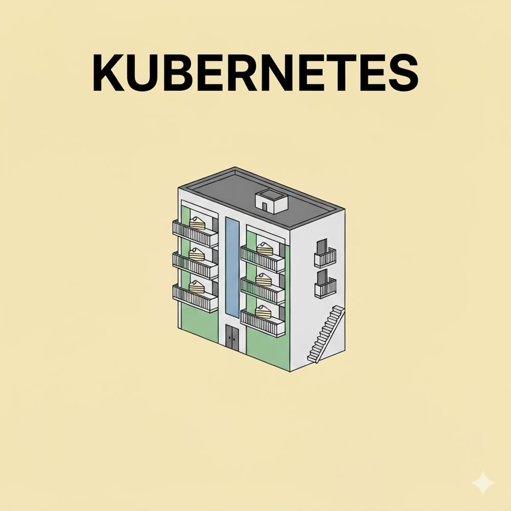
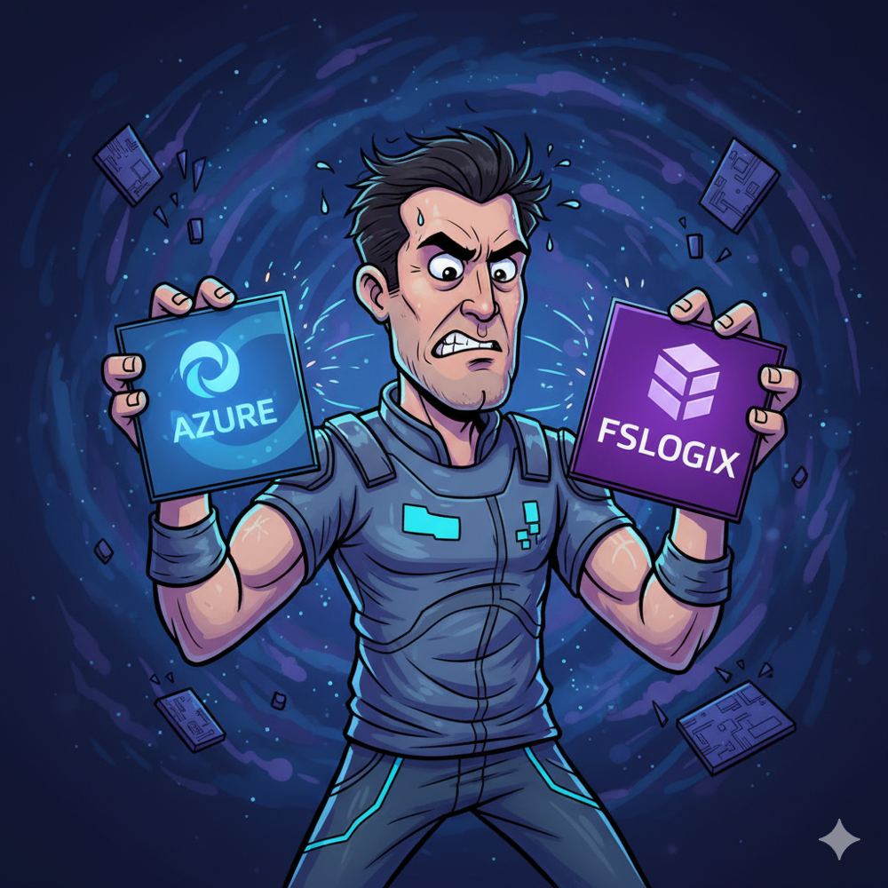
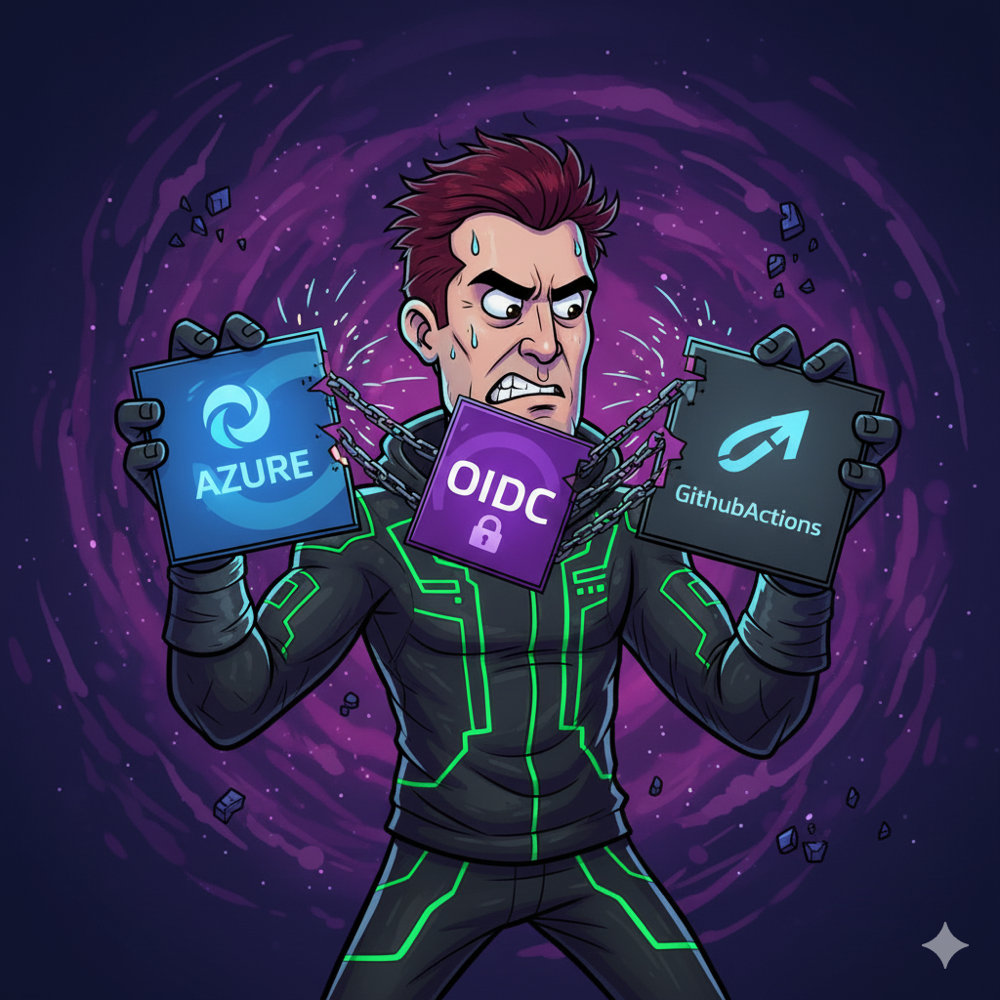

Co wspólnego ma CI/CD z Twoimi wakacjami?
Plan a release the same way you plan a holiday and discover how CI/CD keeps your flights — and deployments — on schedule.
Grab the boarding pass →Deep dives into what I do and DevOps topics explained in plain language.
Plan a release the same way you plan a holiday and discover how CI/CD keeps your flights — and deployments — on schedule.
Grab the boarding pass →
Use a kitchen analogy to understand Dockerfile basics and see how multi-stage builds keep your images tidy.
Read the recipe →
Understand the control plane, nodes, and pods through a housing estate analogy and see why orchestration matters.
Tour the cluster →Pierwsze wpisy dokumentujące moje podejście do labów, eksperymentów i nietypowych wdrożeń.

Jak dzięki Azure Files i wpisowi AccessNetworkAsComputerObject ustabilizowałem profile FSLogix na samodzielnym serwerze w Azure.
Wejdź do labu →
Jak pozbyłem się statycznych sekretów z GitHub Actions, budując zaufanie OIDC między repozytorium a Azure.
Otwórz case study →